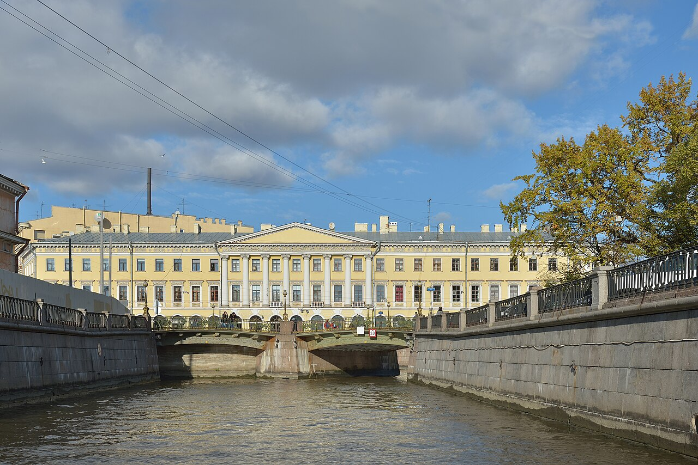

TRIPROTARVISOR
La Venezia del Nord

Contatti
Questo sito è un progetto di scuola del gruppo 5 della classe 5BI dell'ITIS Marconi. Tutti i dati che trovate in questa pagina sono inventati apposta: non scriveteci e non andate a cercare l'indirizzo, perché l'ufficio non esiste. Se però avete domande sul sito o volete segnalare un errore, scriveteci volentieri.
I nostri contatti
| Ufficio turistico | TripRotarVisor, Prospettiva Nevskij 28, San Pietroburgo |
|---|---|
| Telefono | +7 6767676767 |
| info@triprotarvisor.it | |
| Orari | da lunedì a venerdì 9.30 - 18.30, sabato 10.00 - 14.00 |
Come arrivare all'ufficio
La metro più vicina è la linea 3, fermata Admiraltejskaja, e si esce dritti sul canale. Dalla stazione si cammina tre minuti e si vede subito la cupola colorata della Chiesa del Salvatore, che è il modo più semplice per capire dove siete arrivati. Se invece arrivate in aereo, l'aeroporto di Pulkovo dista una mezz'ora di Pullman, e le biglietterie del servizio 59 fanno la strada tre volte al giorno.
Il gruppo
Il sito è stato fatto da tre studenti, ognuno con una parte: Abbiati Andrea si è occupato delle pagine sui musei, Varisco Nicolò delle attrazioni e delle foto, Rotar Elisey degli eventi e dei contatti. Alla fine abbiamo rilegto tutto insieme e sistemato i link.
Le immagini sono fotografie libere di pubblico dominio prese da Wikimedia Commons. I nomi degli hotel e dei ristoranti sono di fantasia, come il numero di telefono.